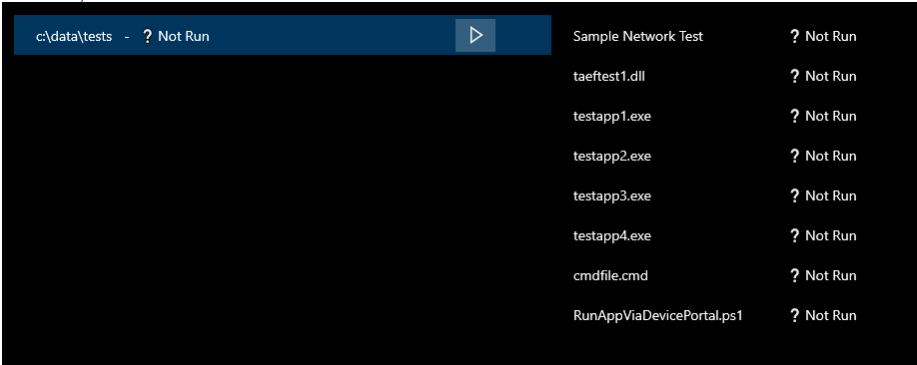
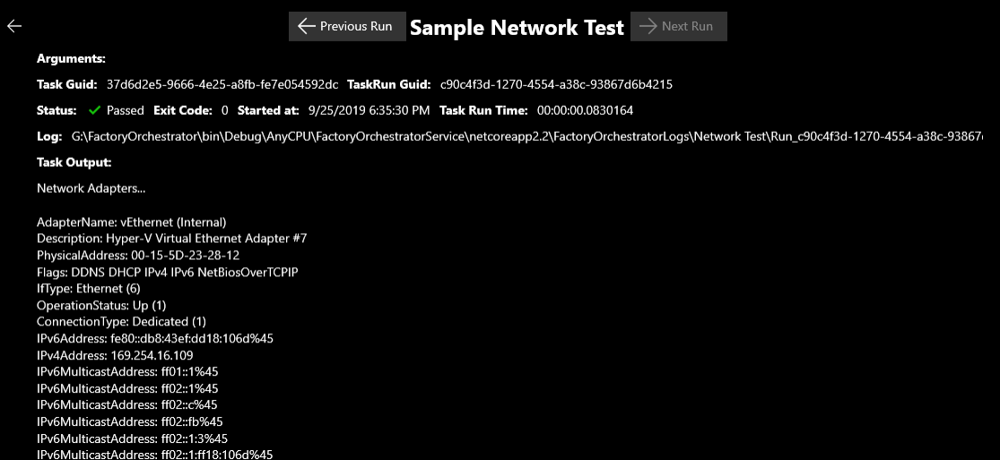

Run tasks with Factory Orchestrator
Once you've created or imported a TaskList into Factory Orchestrator, you can run it. This topic covers the process of running a TaskList.
Run a TaskList
When you click on the Run TaskLists menu item, you'll be see the "Run TaskLists" screen.
Hit the 'Play' button to run a TaskList. As tasks complete, the tasks' output will show next to the task.

While a TaskList is running, the Factory Orchestrator service will continue to run the tasks, even if you close the Factory Orchestrator app.
If you're running a task or a tasklist, the Factory Orchestrator UI allows you to easily monitor the status of any running task by displaying task status. You can disable this task status display by going to the Run TaskLists page and unchecking Track Execution.

As tasks complete, the Tasks' output will show next to the Task. While a TaskList is running, the Factory Orchestrator service will continue to run the tasks, even if you close the Factory Orchestrator app. A running TaskList can be "Aborted" by clicking the 'Pause' button.

If a TaskList is aborted you can either click the 'Play' button to resume executing it or the 'Re-run' button to restart the TaskList from the beginning.
A 'Re-run' button will also appear next to a Task if the TaskList is done executing and that Task failed. Press that button to retry the failed Task.

If you click on a Task, the results page will load and show you the status of the latest "run" (TaskRun) of that Task, including the any output of the Task. The results page also allows you to see the log file path for that run. You can also use the buttons at the top of the page to view older or newer runs of the Task, provided it has been run multiple times.

Factory Orchestrator utilities
The Factory Orchestrator app also includes some basic utilities intended as a starting point for integration into a manufacturing line, fault analysis workflow or developer inner loop.
Command Prompt
A basic and non-interactive command prompt that allows you to troubleshoot without having to use other methods like SSH or Windows Device Portal to connect to your DUT.
While you can run commands and see output when using the built-in command prompt in Factory Orchestrator, it's not an interactive shell. If you run a command that requires additional input, you won't be able to enter the additional input.

File Transfer

A very basic file transfer function that enables you to transfer files & folders to and from your device when you're connected from a Windows PC. This feature is not visible in the Factory Orchestrator app when running the app and service on the same device (the "Transfer Files" tab will be hidden).
One-time setup
First, install the Factory Orchestrator app on a Windows system that is not running the Factory Orchestrator service.
Next, you need to give the Factory Orchestrator app full file system access for file transfer to work. Follow the directions on the Windows 10 file system access and privacy page to give the Factory Orchestrator app access to your local file system. You may need to launch the app at least once before it appears on the Settings app.
Send a file or folder to a DUT
- From your local Windows PC, launch the Factory Orchestrator app and connect to the IP address of the remote DUT.
- Navigate to "Transfer Files". This tab is only visible if you are connected to a remote DUT.
- In the "Local File/Folder" textbox, enter the full path to a file or folder on your local Windows PC.
- In the "Remote File/Fikder" textbox, enter the full path of where you wish the file or folder to be saved on the DUT. Make sure the location you're saving to is writeable.
- Click "Send Local File/Folder" to transfer the file or folder from the Windows PC to the DUT.
Receive a file or folder from your DUT
- From your local Windows PC, launch the Factory Orchestrator app and connect to the IP address of the remote DUT.
- Navigate to "Transfer Files". This tab is only visible if you are connected to a remote DUT.
- In the "Remote File/Folder" textbox, enter the full path of to a file or folder you wish to copy from the DUT.
- In the "Local File/Folder" textbox, enter the full path of where you wish the file or folder to be saved on your local Windows PC. Make sure the location you're saving to is writeable.
- Click "Get Remote File/Folder" to transfer the file or folder from the DUT to your local Windows 10 PC.